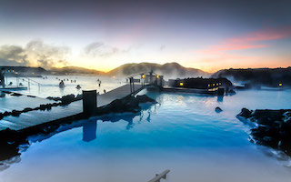
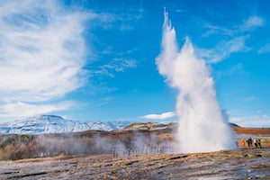
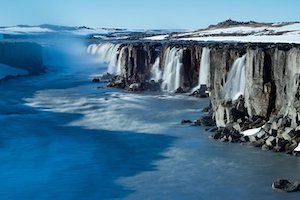
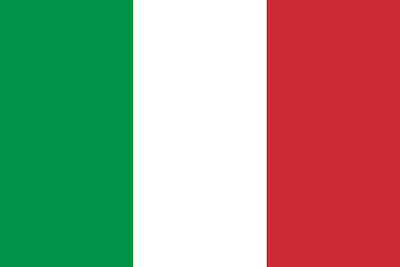
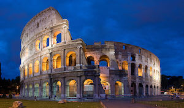
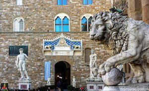
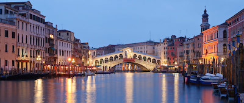

Iceland
3 Best Places to Visit in Iceland
-
Blue Lagoon
Located on the Reykjanes peninsula less than an hour’s drive from Reykjavik, the Blue Lagoon is Iceland’s most popular tourist destination.
-
Golden Circle Route
The region immediately east of Reykjavik contains an intriguing sampling of Iceland’s unique attractions, including historic sites, quaint villages, geysers and waterfalls.
-
Vatnajokull National Park
Home to the largest glacier in Europe, the Vatnajokull National Park is so vast that it encompasses around 14 percent of the country.
Italy
3 Best Places to Visit in Italy
-
Rome
As the capital both of Italy and of the ancient Roman empire, Rome comes, of course, first in our list of favorite sights in Italy.
One of the most famous historic monuments is probably the Colosseum, the ancient gladiator’s stadium where all staged fights were taking place.
The second most important monument is St. Peter Basilique in the independent city-state of Vatican. St. Peter Basilique is the seat of the Pope, head of the Roman Catholic Church.
-
Florence
Florence flourished during the Renaissance as the symbol of elegance, art, culture and architecture in Italy. Two of the most important places to visit in Florence are probably Piazza del Duomo, with the Basilica di Santa Maria del Fiore and the adjacent Giotto’s Bell Tower, and Piazza della Signoria, the latter being one of the oldest market squares and a wonderful place where you can admire some of the most beautiful Florentin architectural achievements, such as Palazzo Vecchio
-
Venice
The city is built on a lagoon, filled with canals, with no roads for cars. A very poetic and romantic place filled with history and art, known for its San Marco square, its Carnaval, its gondolas and its many bridges and magnificent palaces.